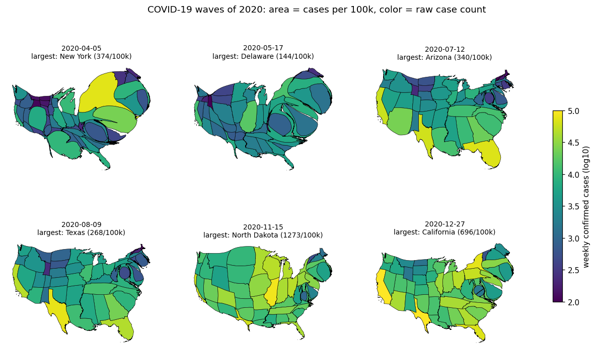
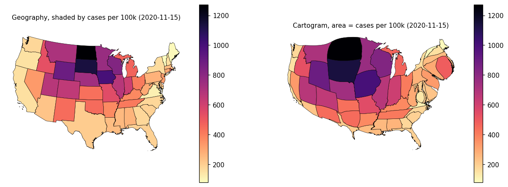

A new bundled weekly case series and a gallery animation of the 2020 waves, where area is cases per 100k and color is the raw case count. Check the early keyframes - at 300:1 area ratios several states compress into lens-shaped slivers.
src/carto_flow/data/us_covid_weekly.parquet (35 KB) - weekly new confirmedcases per state, 2020-01-26 to 2023-03-12, 9,184 rows.
load_us_covid_weekly() and its entry in the data reference table.scripts/download_covid_cases.py - regenerates the parquet from the JHUsource, documenting the derivation (county rows summed to states, cumulative differenced to daily, negative corrections clipped to zero, summed into weeks ending Sunday).
docs/examples/flow_cartogram/plot_flow_covid_waves.py - the animation.tests/test_data_validity.py, which previously covered onlygeometry validity and now also checks the tabular loaders. One of them reproduces JHU's reported US total: the series sums to 103.9 million confirmed cases.
The early keyframes are degenerate. Every frame converges - MorphStatus is CONVERGED for all 21 - but converging on a 303:1 area ratio means the smallest states become slivers, and in the 2020-04-05 and 2020-05-17 panels above the result no longer reads as a map of the United States.
| keyframe | min per 100k | max per 100k | ratio |
|---|---|---|---|
| 2020-03-22 | 0.89 (West Virginia) | 74.6 | 84:1 |
| 2020-04-05 | 7.71 (Minnesota) | 374.3 | 49:1 |
| 2020-04-19 | 4.33 (Montana) | 263.9 | 61:1 |
| 2020-05-03 | 0.66 (Montana) | 199.5 | 303:1 |
| 2020-05-17 | 0.94 (Montana) | 144.0 | 153:1 |
| 2020-05-31 | 3.39 (Montana) | 107.1 | 32:1 |
The zero problem raised earlier is already handled, but by choosing the start date rather than by flooring: the series starts at 2020-03-22, the first week in which every contiguous geography had recorded a case, so no state is ever sized zero. What is left is the spread among the non-zero values.
Three ways to tame it, none applied:
1. Leave it. The distortion is the data, and the animation recovers after May. 2. Floor the sizing column, for example at a small percentile of each week's values, so no state falls below a readable area. Costs fidelity in exactly the weeks where the contrast is the story. 3. Start the animation later, at the cost of losing the Northeast wave, which is the clearest of the three.
This is a judgment call about what the example should teach, so it is left for you rather than decided here.
The example's prose asserted several numbers that the data does not support:
December." Only North Dakota is ever the largest in a keyframe, and only from 2020-10-04 to 2020-11-29. South Dakota peaks at second. Tennessee leads on 2020-12-13 and California on 2020-12-27.
In the week ending 2020-11-15 California recorded 60,704 cases against North Dakota's 9,682 and South Dakota's 9,977 - 6.3 times North Dakota alone, 3.1 times the two combined.
keyframes are sampled every second week, but each is sized to one week's cases, not two weeks' worth.
The Sun Belt claim does hold: Arizona, Florida, Louisiana and Mississippi all exceed 250 per 100k within the June-August keyframes.
densify_coverage(us_states, max_segment_length=5000) was a no-op - the bundled boundaries already carry a vertex every 5 km. Lowering it to 1 km cuts the "straight segment" warnings from 12 to 3 over the 21 keyframes.
No input densification removes them entirely:
| max_segment_length | warnings across 21 keyframes |
|---|---|
| none (5 km as bundled) | 12 |
| 2 km | 5 |
| 1 km | 3 |
They are raised at workflow.py:259, where each multiresolution level is handed the previous level's output. A heavily stretched state can leave a long straight edge in an intermediate result, which the next, finer level then reports. The input is not at fault and densifying it further cannot fix it; re-densifying between levels would, which is the deferred item that changes vertex counts and so breaks keyframe animations. The example now says this in a comment.
make check: pre-commit, ruff, mypy (80 files), deptry all clean.pytest tests/test_data_validity.py: 32 passed.MPLBACKEND=Agg.every state present in every week, weeks all ending Sunday, last week 2023-03-12, no negative counts.

Six of the 21 keyframes. Area is that week's cases per 100k, color is the raw weekly count on a log10 scale. The three waves are legible: the Northeast alone in April, the Sun Belt in July and August, the Upper Midwest from September. Note the first two panels - at high area ratios several states are squeezed into lens-shaped slivers and the national outline stops being recognizable. This is the item for review.

The week ending 2020-11-15 as geography and as cartogram, both shaded by cases per 100k. This is the example working as intended: the Dakotas swell to dominate the map while the outline stays readable. The area ratio that week is well under 100:1.